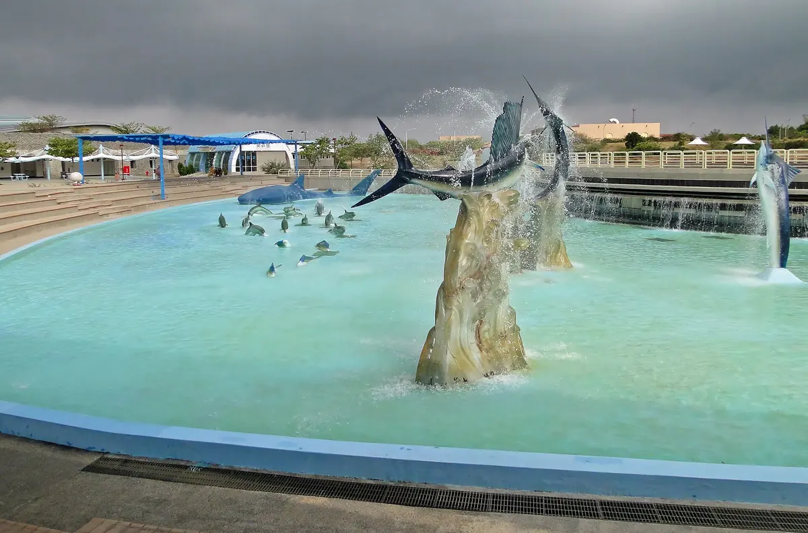

국립해양생물박물관 입장권과 근처 맛집, 관람 후 어디서 먹을까?
벨루가와 펭귄을 보러 가기 전에, 세 전시관과 가는 법, 지도에 등록된 근처 맛집을 챙겨보세요.
게시 · 수정
국립해양생물박물관(國立海洋生物博物館)은 핑둥(屏東) 처청향(車城鄉)에 있는 대형 수족관이에요. 컨딩 가는 길에 들르는 사람이 많아요. 交通部觀光署 자료를 바탕으로 2026년 10월 기준으로 정리했어요.
01 · 국립해양생물박물관은 어떤 곳일까
屏東 車城鄉 後灣路 2호에 있는 대형 수족관으로, 臺灣水域館, 珊瑚王國館, 世界水域館 세 관으로 나뉘어 있어요. 미쉐린 그린 가이드에서 별 3개를 받았어요.

02 · 꼭 볼 것
흰고래(벨루가) 가장 인기 있는 동물이에요.
펭귄 벨루가와 함께 인기가 많아요.
대왕고래 뼈 대왕고래 골격 전시도 볼 수 있어요.
비 오는 날에도 실내 관람이라 비 오는 날이나 한여름 낮에 가기 좋아요.
03 · 가는 법
고속철 쭤잉역에서 高鐵 左營역에서 컨딩 방면 버스를 타고 가요.
차로 렌터카나 택시로 가도 돼요.
04 · 관람 후 들르기 좋은 근처 맛집
박물관 바로 근처에는 지도에 등록된 식당이 없어요. 가장 가까운 곳이 약 6.6km, 나머지는 12~15km 떨어져 있어 차로 이동하는 편이 편해요. 아래 거리는 지도에 등록된 좌표로 잰 직선거리라 실제 이동 거리는 더 길 수 있어요.
Yu Jhen Siang Handmade Egg Rolls · 베이커리 · 남동쪽 약 6.6km 지도 메모: 오리지널 에그롤이 바삭하게 사르르 녹고 홍콩보다 낫다며 재방문 의사를 밝혔다.
亞發師海景餐廳 · 해산물 · 남쪽 약 12.1km 지도 메모: 컨딩 바닷가 어시장 2층의 해산물 식당으로, 큰 접시 모둠회가 NT$200으로 싸고 싱싱하며 영어 메뉴판이 있고 카드 결제도 된다.
Alex Reggae Bar · BBQ · 남동쪽 약 15.0km 지도 메모: 컨딩 맛집으로 강력 추천 숯 바비 바; 만 향이 거의 없 맛있으며 쏨땀도 맛있다는 후.
가게마다 쉬는 날과 영업시간이 다르니 방문 전 구글맵에 등록된 영업시간을 확인하세요.
지도에서 컨딩 맛집도 확인해보세요
박물관 일정 앞뒤로 들를 컨딩 맛집을 지도에서 함께 찜해두세요.